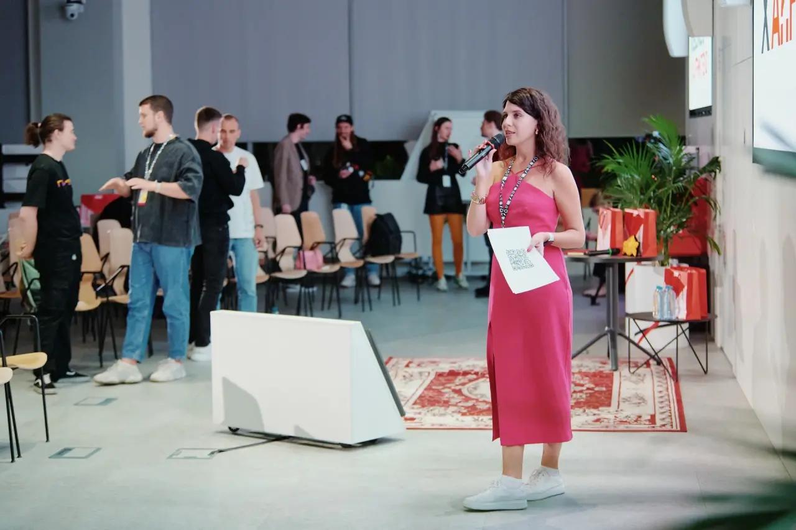
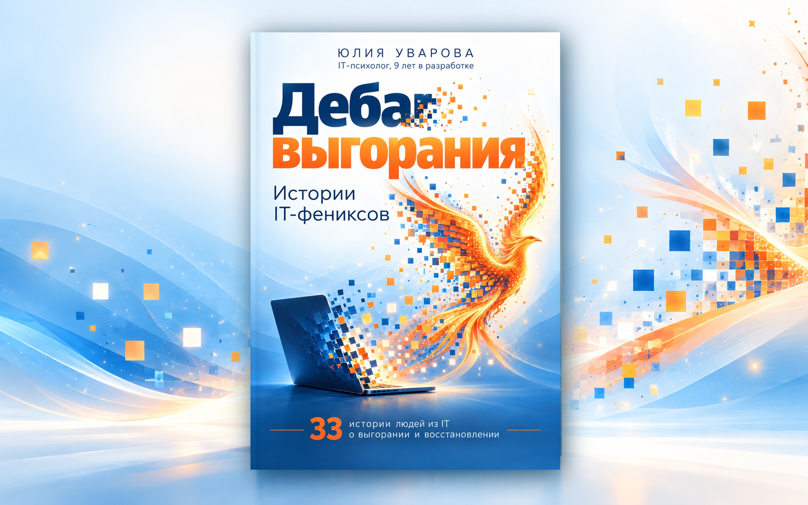
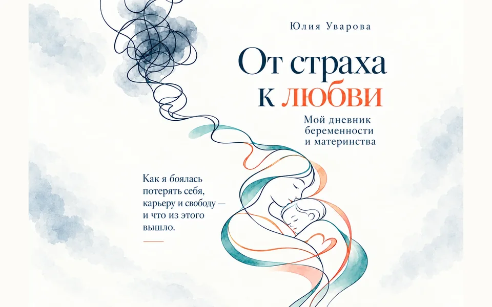
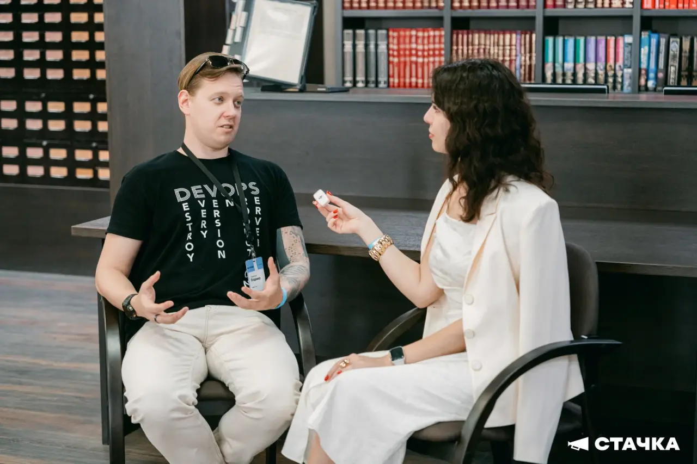

Тренинги для IT-руководителей
Когда сильный разработчик становится руководителем, а сложные разговоры, делегирование и обратная связь оказываются новой профессией.
- Практика на рабочих кейсах
- Начинающие и опытные тимлиды
Конфликты, выгорание, делегирование, сложные разговоры. Провожу тренинги и тимбилдинги, консультирую руководителей и помогаю готовить выступления.
А ещё пишу книги о людях, их работе и непростых решениях.

Помогаю HR и IT-руководителям работать с конфликтами и выгоранием, развивать команды и рассказывать о компании так, чтобы ей доверяли кандидаты и клиенты.
Когда сильный разработчик становится руководителем, а сложные разговоры, делегирование и обратная связь оказываются новой профессией.

Командные игры и задания, где приходится договариваться, распределять роли, отстаивать позицию и слышать других.

Истории основателей, сотрудников и проектов — в книге и материалах для найма, PR, переговоров с клиентами и заявок на HR-премии.
Повысили разработчиков до тимлидов, но никто не учил их управлять людьми.
В команде копятся недоговорённости, конфликты и взаимные претензии.
Руководители перегружены, сотрудники выгорают, а работу всё равно нужно делать.
Нужно провести сложный разговор, защитить решение или объяснить техническую идею бизнесу.
Для разных ситуаций есть разные форматы. Выберите, какой нужен вам:
Для руководителей, экспертов и создателей продуктов.
Поговорим о конкретном случае: что мешает, что происходит с людьми и какие шаги доступны вам как руководителю.
Для спикеров конференций, IT-экспертов и основателей стартапов: структура доклада, презентация продукта бизнесу, репетиция и ответы на сложные вопросы.
В первую очередь — о работе, людях и состоянии, которое не всегда видно окружающим.
Как они замечали первые признаки, что происходило в работе и жизни и как искали выход. Реальные истории и психологические комментарии о причинах выгорания и восстановлении.
Подробнее о книге ↗
У меня есть художественная серия об отношениях, а сейчас я работаю над личной книгой о материнстве.

Художественная серия · отношения, чувства и выбор · 18+
О серии и покупке ↗
Можно посмотреть выступления, послушать героев подкаста или познакомиться со мной через Telegram.
Доклады про выгорание, сложных коллег, управление и коммуникацию. На IT-конференциях и корпоративных мероприятиях.
Все выступления и гостевые подкасты ↗
Более 100 выпусков с разработчиками, руководителями и CEO — про карьерные повороты, решения и людей в IT.
Пишу о работе, психологии, книгах, карьере и том, что не всегда помещается в формат выступления.
Читать канал ↗«iOS Такой», DeusOps, «Школа системного анализа», Рексофт, Peer2Peer × Solvery.
Смотреть весь список и записи выступлений ↗IT-психолог, писатель, спикер и ведущая подкаста «Дебаг карьеры».
9 лет работала в разработке: вела IT-проекты, координировала работу разработчиков, аналитиков и тестировщиков. 11 лет в психологии и коучинге.
Выступала на Стачка, Merge, Summer Merge, HolyJS, MoscowJS, КаргоКульт, Selectel Day Off, Импульс. Член программных комитетов IT-конференций. Провожу тренинги и тимбилдинги, консультирую IT-руководителей и пишу книги о реальных историях людей.
Обучение руководителей, командное мероприятие, личная консультация, выступление или идея книги. Обсудим, какой формат подходит.